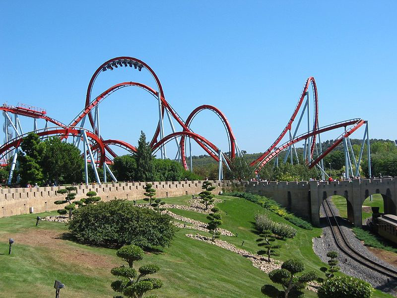
- Observe that motion in two dimensions consists of horizontal and vertical components.
- Understand the independence of horizontal and vertical vectors in two-dimensional motion.
Suppose you want to walk from one point to another in a city with uniform square blocks, as pictured in Figure .
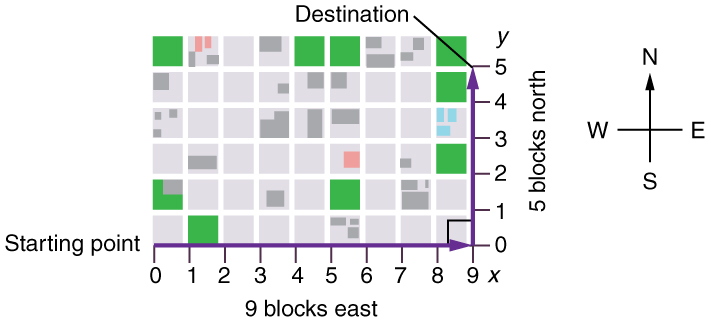
The straight-line path that a helicopter might fly is blocked to you as a pedestrian, and so you are forced to take a two-dimensional path, such as the one shown. You walk 14 blocks in all, 9 east followed by 5 north. What is the straight-line distance?
An old adage states that the shortest distance between two points is a straight line. The two legs of the trip and the straight-line path form a right triangle, and so the Pythagorean theorem,
can be used to find the straight-line distance.
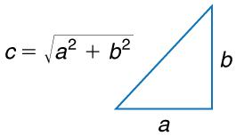
The hypotenuse of the triangle is the straight-line path, and so in this case its length in units of city blocks is \(\sqrt{(9 blocks)^2+ (5 blocks)^2}= 10.3 blocks\), considerably shorter than the 14 blocks you walked. (Note that we are using three significant figures in the answer. Although it appears that “9” and “5” have only one significant digit, they are discrete numbers. In this case “9 blocks” is the same as “9.0 or 9.00 blocks.” We have decided to use three significant figures in the answer in order to show the result more precisely.)
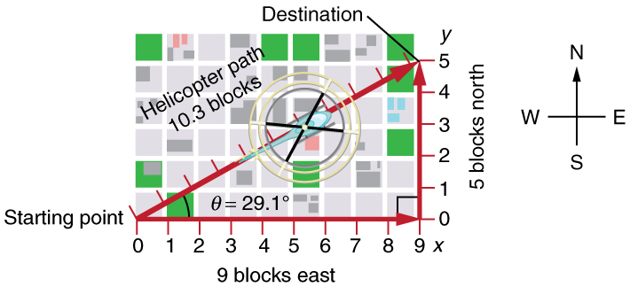
The fact that the straight-line distance (10.3 blocks) in Figure is less than the total distance walked (14 blocks) is one example of a general characteristic of vectors. (Recall thatvectorsare quantities that have both magnitude and direction.)
As for one-dimensional kinematics, we use arrows to represent vectors. The length of the arrow is proportional to the vector’s magnitude. The arrow’s length is indicated by hash marks in Figure and Figure. The arrow points in the same direction as the vector. For two-dimensional motion, the path of an object can be represented with three vectors: one vector shows the straight-line path between the initial and final points of the motion, one vector shows the horizontal component of the motion, and one vector shows the vertical component of the motion. The horizontal and vertical components of the motion add together to give the straight-line path. For example, observe the three vectors in Figure. The first represents a 9-block displacement east. The second represents a 5-block displacement north. These vectors are added to give the third vector, with a 10.3-block total displacement. The third vector is the straight-line path between the two points. Note that in this example, the vectors that we are adding are perpendicular to each other and thus form a right triangle. This means that we can use the Pythagorean theorem to calculate the magnitude of the total displacement. (Note that we cannot use the Pythagorean theorem to add vectors that are not perpendicular. We will develop techniques for adding vectors having any direction, not just those perpendicular to one another, in Vector Addition and Subtraction: Graphical Methods and Vector Addition and Subtraction: Analytical Methods.)
The person taking the path shown in Figure walks east and then north (two perpendicular directions). How far he or she walks east is only affected by his or her motion eastward. Similarly, how far he or she walks north is only affected by his or her motion northward.
INDEPENDENCE OF MOTION
The horizontal and vertical components of two-dimensional motion are independent of each other. Any motion in the horizontal direction does not affect motion in the vertical direction, and vice versa.
This is true in a simple scenario like that of walking in one direction first, followed by another. It is also true of more complicated motion involving movement in two directions at once. For example, let’s compare the motions of two baseballs. One baseball is dropped from rest. At the same instant, another is thrown horizontally from the same height and follows a curved path. A stroboscope has captured the positions of the balls at fixed time intervals as they fall.
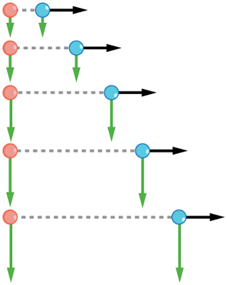
It is remarkable that for each flash of the strobe, the vertical positions of the two balls are the same. This similarity implies that the vertical motion is independent of whether or not the ball is moving horizontally. (Assuming no air resistance, the vertical motion of a falling object is influenced by gravity only, and not by any horizontal forces.) Careful examination of the ball thrown horizontally shows that it travels the same horizontal distance between flashes. This is due to the fact that there are no additional forces on the ball in the horizontal direction after it is thrown. This result means that the horizontal velocity is constant, and affected neither by vertical motion nor by gravity (which is vertical). Note that this case is true only for ideal conditions. In the real world, air resistance will affect the speed of the balls in both directions.
The two-dimensional curved path of the horizontally thrown ball is composed of two independent one-dimensional motions (horizontal and vertical). The key to analyzing such motion, calledprojectile motion, is toresolve(break) it into motions along perpendicular directions. Resolving two-dimensional motion into perpendicular components is possible because the components are independent. We shall see how to resolve vectors in Vector Addition and Subtraction: Graphical Methods and Vector Addition and Subtraction: Analytical Methods. We will find such techniques to be useful in many areas of physics.
PHET EXPLORATIONS: LADYBUG MOTION 2D
Learn about position, velocity and acceleration vectors. Move the ladybug by setting the position, velocity or acceleration, and see how the vectors change. Choose linear, circular or elliptical motion, and record and playback the motion to analyze the behavior.

📖 OpenStax College Physics, Section 3.1. openstax.org · CC BY 4.0
- Understand the rules of vector addition, subtraction, and multiplication.
- Apply graphical methods of vector addition and subtraction to determine the displacement of moving objects.
#### Vector Addition and Subtraction: Graphical Methods
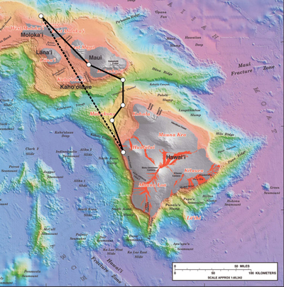
#### Vectors in Two Dimensions
Avectoris a quantity that has magnitude and direction. Displacement, velocity, acceleration, and force, for example, are all vectors. In one-dimensional, or straight-line, motion, the direction of a vector can be given simply by a plus or minus sign. In two dimensions (2-d), however, we specify the direction of a vector relative to some reference frame (i.e., coordinate system), using an arrow having length proportional to the vector’s magnitude and pointing in the direction of the vector.
Figure shows such agraphical representation of a vector, using as an example the total displacement for the person walking in a city considered in Kinematics in Two Dimensions: An Introduction. We shall use the notation that a boldface symbol, such as \(D\), stands for a vector. Its magnitude is represented by the symbol in italics, \(D\), and its direction by \(θ\).
In this text, we will represent a vector with a boldface variable. For example, we will represent the quantity force with the vector \(F\), which has both magnitude and direction. The magnitude of the vector will be represented by a variable in italics, such as \(F\), and the direction of the variable will be given by an angle \(θ\).
![A graph is shown. On the axes the scale is set to one block is equal to one unit. A helicopter starts moving from the origin at an angle of twenty nine point one degrees above the x axis. The current position of the helicopter is ten point three blocks along its line of motion. The destination of the helicopter is the point which is nine blocks in the positive x direction and five blocks in the positive y direction. The positive direction of the x axis is east and the positive direction of the y axis is north.](images/ch3/fig3-9-a-graph-is-shown-on-the-axes-the-scale-i.jpg)
Figure :A person walks 9 blocks east and 5 blocks north. The displacement is 10.3 blocks at an angle.1ºnorth of east.
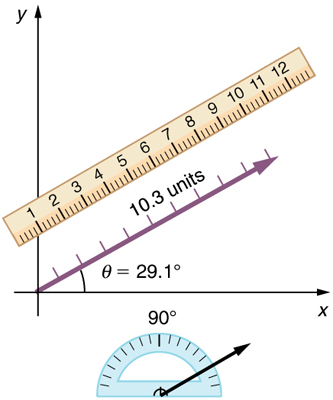
#### Vector Addition: Head-to-Tail Method
Thehead-to-tail methodis a graphical way to add vectors, described in Figure below and in the steps following. Thetailof the vector is the starting point of the vector, and thehead(or tip) of a vector is the final, pointed end of the arrow.
![In part a, a vector of magnitude of nine units and making an angle of theta is equal to zero degrees is drawn from the origin and along the positive direction of x axis. In part b a vector of magnitude of nine units and making an angle of theta is equal to zero degree is drawn from the origin and along the positive direction of x axis. Then a vertical arrow from the head of the horizontal arrow is drawn. In part c a vector D of magnitude ten point three is drawn from the tail of the horizontal vector at an angle theta is equal to twenty nine point one degrees from the positive direction of x axis. The head of the vector D meets the head of the vertical vector. A scale is shown parallel to the vector D to measure its length. Also a protractor is shown to measure the inclination of the vectorD.](images/ch3/fig3-11-in-part-a-a-vector-of-magnitude-of-nine-.jpg)
Step 1.Draw an arrow to represent the first vector (9 blocks to the east) using a ruler and protractor.
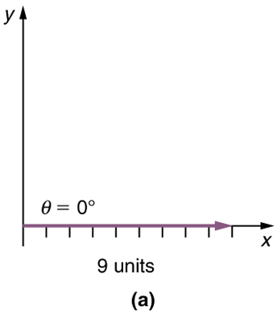
Step 2.Now draw an arrow to represent the second vector (5 blocks to the north). Place the tail of the second vector at the head of the first vector.
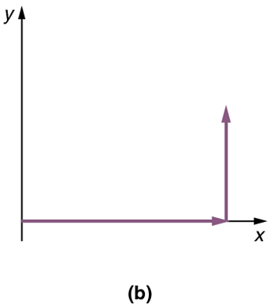
Step 3.If there are more than two vectors, continue this process for each vector to be added. Note that in our example, we have only two vectors, so we have finished placing arrows tip to tail.
Step 4.Draw an arrow from the tail of the first vector to the head of the last vector. This is theresultant, or the sum, of the other vectors.
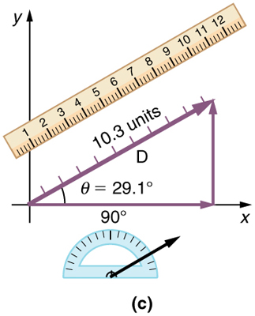
Step 5.To get themagnitudeof the resultant,measure its length with a ruler. (Note that in most calculations, we will use the Pythagorean theorem to determine this length.)
Step 6.To get thedirectionof the resultant,measure the angle it makes with the reference frame using a protractor. (Note that in most calculations, we will use trigonometric relationships to determine this angle.)
The graphical addition of vectors is limited in accuracy only by the precision with which the drawings can be made and the precision of the measuring tools. It is valid for any number of vectors.
Use the graphical technique for adding vectors to find the total displacement of a person who walks the following three paths (displacements) on a flat field. First, she walks 25.0 m in a direction north of east. Then, she walks 23.0 m heading north of east. Finally, she turns and walks 32.0 m in a direction68.0°south of east.
Represent each displacement vector graphically with an arrow, labeling the first , the second , and the third , making the lengths proportional to the distance and the directions as specified relative to an east-west line. The head-to-tail method outlined above will give a way to determine the magnitude and direction of the resultant displacement, denoted .
(1) Draw the three displacement vectors.
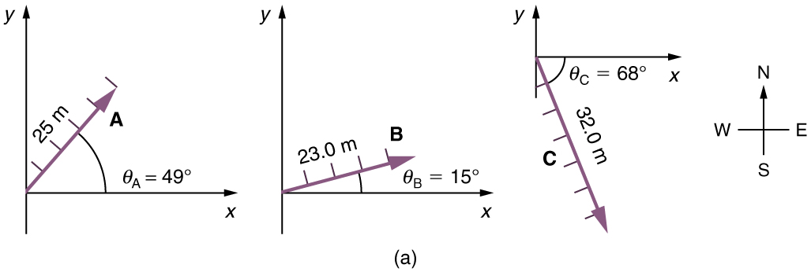
(2) Place the vectors head to tail retaining both their initial magnitude and direction.
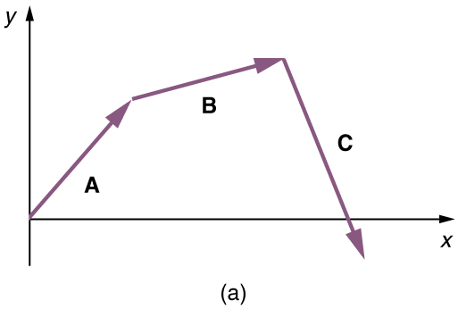
(3) Draw the resultant vector, .
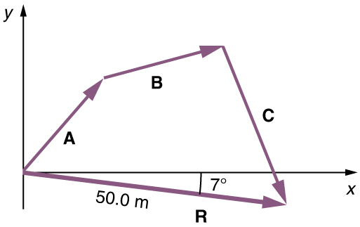
(4) Use a ruler to measure the magnitude of , and a protractor to measure the direction of. While the direction of the vector can be specified in many ways, the easiest way is to measure the angle between the vector and the nearest horizontal or vertical axis. Since the resultant vector is south of the eastward pointing axis, we flip the protractor upside down and measure the angle between the eastward axis and the vector.
![In this figure a vector A with a positive slope is drawn from the origin. Then from the head of the vector A another vector B with positive slope is drawn and then another vector C with negative slope from the head of the vector B is drawn which cuts the x axis. From the tail of the vector A a vector R of magnitude of fifty meter and with negative slope of seven degrees is drawn. The head of this vector R meets the head of the vector C. The vector R is known as the resultant vector. A ruler is placed along the vector R to measure it. Also there is a protractor to measure the angle.](images/ch3/fig3-18-in-this-figure-a-vector-a-with-a-positiv.jpg)
In this case, the total displacement is seen to have a magnitude of 50.0 m and to lie in a direction south of east. By using its magnitude and direction, this vector can be expressed as=50.0 mand=7.0ºsouth of east.
The head-to-tail graphical method of vector addition works for any number of vectors. It is also important to note that the resultant is independent of the order in which the vectors are added. Therefore, we could add the vectors in any order as illustrated in Figure and we will still get the same solution.
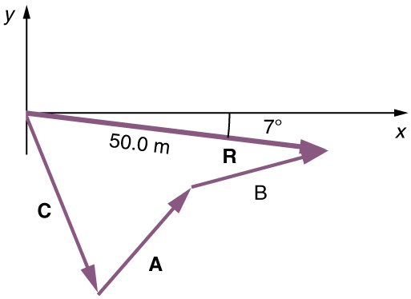
Here, we see that when the same vectors are added in a different order, the result is the same. This characteristic is true in every case and is an important characteristic of vectors. Vector addition iscommutative. Vectors can be added in any order.
(This is true for the addition of ordinary numbers as well—you get the same result whether you add+3or+2, for example).
Vector subtraction is a straightforward extension of vector addition. To define subtraction (say we want to subtract from , written–B, we must first define what we mean by subtraction. Thenegativeof a vector is defined to be ; that is, graphicallythe negative of any vector has the same magnitude but the opposite direction, as shown in Figure. In other words, has the same length as , but points in the opposite direction. Essentially, we just flip the vector so it points in the opposite direction.
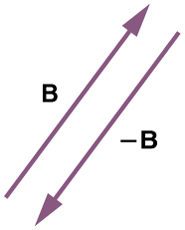
Thesubtractionof vector from vector is then simply defined to be the addition of to . Note that vector subtraction is the addition of a negative vector. The order of subtraction does not affect the results.
This is analogous to the subtraction of scalars (where, for example,(–2)). Again, the result is independent of the order in which the subtraction is made. When vectors are subtracted graphically, the techniques outlined above are used, as the following example illustrates.
A woman sailing a boat at night is following directions to a dock. The instructions read to first sail 27.5 m in a directionnorth of east from her current location, and then travel 30.0 m in a directionnorth of east (or west of north). If the woman makes a mistake and travels in theoppositedirection for the second leg of the trip, where will she end up? Compare this location with the location of the dock.
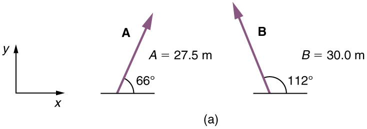
We can represent the first leg of the trip with a vector , and the second leg of the trip with a vector . The dock is located at a location+B. If the woman mistakenly travels in theoppositedirection for the second leg of the journey, she will travel a distance (30.0 m) in the direction–112º=68ºsouth of east. We represent this as , as shown below. The vector has the same magnitude as but is in the opposite direction. Thus, she will end up at a location+(–B), or–B.
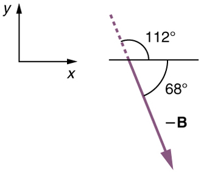
We will perform vector addition to compare the location of the dock,+B, with the location at which the woman mistakenly arrives,+(–B).
(1) To determine the location at which the woman arrives by accident, draw vectors and .
(2) Place the vectors head to tail.
(3) Draw the resultant vector .
(4) Use a ruler and protractor to measure the magnitude and direction of .
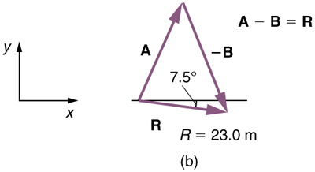
In this case,=23.0 mand=7.5ºsouth of east.
(5) To determine the location of the dock, we repeat this method to add vectors and. We obtain the resultant vector':
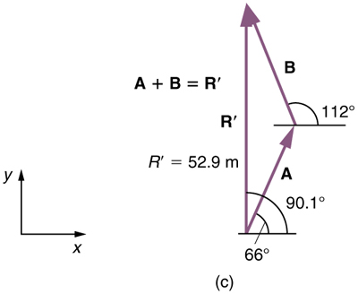
In this case= 52.9 mand=90.1ºnorth of east.
We can see that the woman will end up a significant distance from the dock if she travels in the opposite direction for the second leg of the trip.
Because subtraction of a vector is the same as addition of a vector with the opposite direction, the graphical method of subtracting vectors works the same as for addition.
If we decided to walk three times as far on the first leg of the trip considered in the preceding example, then we would walk×27.5 m, or 82.5 m, in a direction.0ºnorth of east. This is an example of multiplying a vector by a positivescalar. Notice that the magnitude changes, but the direction stays the same.
If the scalar is negative, then multiplying a vector by it changes the vector’s magnitude and gives the new vector theoppositedirection. For example, if you multiply by –2, the magnitude doubles but the direction changes. We can summarize these rules in the following way: When vector is multiplied by a scalar,
In our case,=3and=27.5 m. Vectors are multiplied by scalars in many situations. Note that division is the inverse of multiplication. For example, dividing by 2 is the same as multiplying by the value (1/2). The rules for multiplication of vectors by scalars are the same for division; simply treat the divisor as a scalar between 0 and 1.
In the examples above, we have been adding vectors to determine the resultant vector. In many cases, however, we will need to do the opposite. We will need to take a single vector and find what other vectors added together produce it. In most cases, this involves determining the perpendicularcomponentsof a single vector, for example thex-andy-components, or the north-south and east-west components.
For example, we may know that the total displacement of a person walking in a city is 10.3 blocks in a direction.0ºnorth of east and want to find out how many blocks east and north had to be walked. This method is calledfinding the components (or parts)of the displacement in the east and north directions, and it is the inverse of the process followed to find the total displacement. It is one example of finding the components of a vector. There are many applications in physics where this is a useful thing to do. We will see this soon in Projectile Motion, and much more when we coverforcesin Dynamics: Newton’s Laws of Motion. Most of these involve finding components along perpendicular axes (such as north and east), so that right triangles are involved. The analytical techniques presented in Vector Addition and Subtraction: Analytical Methods are ideal for finding vector components.
PHET EXPLORATIONS: MAZE GAME
Learn about position, velocity, and acceleration in the "Arena of Pain". Use the green arrow to move the ball. Add more walls to the arena to make the game more difficult. Try to make a goal as fast as you can.

📖 OpenStax College Physics, Section 3.2. openstax.org · CC BY 4.0
- Understand the rules of vector addition and subtraction using analytical methods.
- Apply analytical methods to determine vertical and horizontal component vectors.
- Apply analytical methods to determine the magnitude and direction of a resultant vector.
Analytical methodsof vector addition and subtraction employ geometry and simple trigonometry rather than the ruler and protractor of graphical methods. Part of the graphical technique is retained, because vectors are still represented by arrows for easy visualization. However, analytical methods are more concise, accurate, and precise than graphical methods, which are limited by the accuracy with which a drawing can be made. Analytical methods are limited only by the accuracy and precision with which physical quantities are known.
Analytical techniques and right triangles go hand-in-hand in physics because (among other things) motions along perpendicular directions are independent. We very often need to separate a vector into perpendicular components. For example, given a vector like \(\displaystyle A\) in Figure , we may wish to find which two perpendicular vectors, \(\displaystyle A_x\) and \(\displaystyle A_y\), add to produce it.
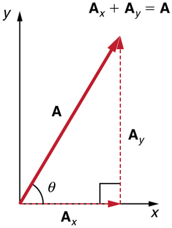
Figure :The vector \(\displaystyle A\), with its tail at the origin of an x, y-coordinate system, is shown together with its x- and y-components, \(\displaystyle A_x\) and \(\displaystyle A_y\). These vectors form a right triangle. The analytical relationships among these vectors are summarized below.
Note that this relationship between vector components and the resultant vector holds only for vector quantities (which include both magnitude and direction). The relationship does not apply for the magnitudes alone. For example, if \(\displaystyle A_x=3 m\) east, \(\displaystyle A_y=4 m\) north, and \(\displaystyle A=5 m \)north-east, then it is true that the vectors \(\displaystyle A_x + A_y = A\). However, it is not true that the sum of the magnitudes of the vectors is also equal. That is,
If the vector \(\displaystyle A\) is known, then its magnitude \(\displaystyle A\) (its length) and its angle \(\displaystyle θ\) (its direction) are known. To find \(\displaystyle A_x\) and \(\displaystyle A_y\), its x- and y-components, we use the following relationships for a right triangle.
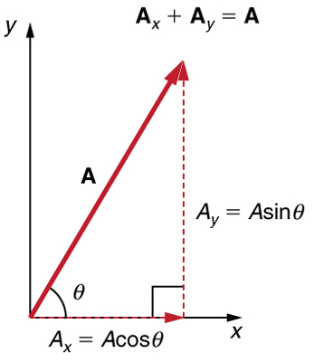
Suppose, for example, thatAis the vector representing the total displacement of the person walking in a city considered in Kinematics in Two Dimensions: An Introduction and Vector Addition and Subtraction: Graphical Methods.
![In the given figure a vector A of magnitude ten point three blocks is inclined at an angle twenty nine point one degrees to the positive x axis. The horizontal component A sub x of vector A is equal to A cosine theta which is equal to ten point three blocks multiplied to cosine twenty nine point one degrees which is equal to nine blocks east. Also the vertical component A sub y of vector A is equal to A sin theta is equal to ten point three blocks multiplied to sine twenty nine point one degrees, which is equal to five point zero blocks north.](images/ch3/fig3-28-in-the-given-figure-a-vector-a-of-magnit.jpg)
Figure : We can use the relationships \(\displaystyle A_x=Acosθ\) and \(\displaystyle A_y=Asinθ\) to determine the magnitude of the horizontal and vertical component vectors in this example.
Then \(\displaystyle A=10.3\) blocks and \(\displaystyle θ=29.1º\), so that
If the perpendicular components \(\displaystyle A_x\) and \(\displaystyle A_y\) of a vector \(\displaystyle A\) are known, then A can also be found analytically. To find the magnitude \(\displaystyle A\) and direction \(\displaystyle θ\) of a vector from its perpendicular components \(\displaystyle A_x\) and \(\displaystyle A_y\), we use the following relationships:
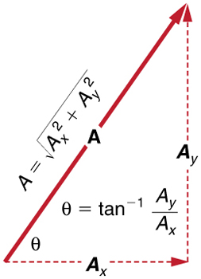
Figure :The magnitude and direction of the resultant vector can be determined once the horizontal and vertical components \(\displaystyle A_x\) and \(\displaystyle A_y\) have been determined.
Note that the equation \(\displaystyle A=\sqrt{A^2_x+A^2_y}\) is just the Pythagorean theorem relating the legs of a right triangle to the length of the hypotenuse. For example, if \(\displaystyle A_x\) and \(\displaystyle A_y\) are 9 and 5 blocks, respectively, then \(\displaystyle A=\sqrt{9^2+5^2}=10.3\) blocks, again consistent with the example of the person walking in a city. Finally, the direction is \(\displaystyle θ=tan^{–1}(5/9)=29.1º\), as before.
DETERMINING VECTORS AND VECTOR COMPONENTS WITH ANALYTICAL METHODS
Equations \(\displaystyle A_x=Acosθ\) and \(\displaystyle A_y=Asinθ\) are used to find the perpendicular components of a vector—that is, to go from \(\displaystyle A\) and \(\displaystyle θ\) to \(\displaystyle A_x\) and \(\displaystyle A_y\). Equations \(\displaystyle A=\sqrt{A^2_x+A^2_y}\) and \(\displaystyle θ=tan^{–1}(A_y/A_x)\) are used to find a vector from its perpendicular components—that is, to go from \(\displaystyle A_x\) and \(\displaystyle A_y\) to \(\displaystyle A\) and \(\displaystyle θ\). Both processes are crucial to analytical methods of vector addition and subtraction.
To see how to add vectors using perpendicular components, consider Figure , in which the vectors \(\displaystyle A\) and \(\displaystyle B\) are added to produce the resultant \(\displaystyle R\).
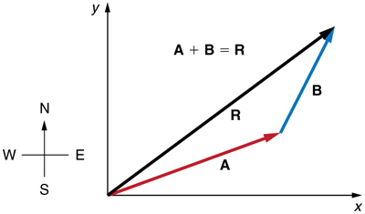
Figure :Vectors \(\displaystyle A\) and\(\displaystyle B\) are two legs of a walk, and \(\displaystyle R\) is the resultant or total displacement. You can use analytical methods to determine the magnitude and direction of \(\displaystyle R\).
If \(\displaystyle A\) and \(\displaystyle B\) represent two legs of a walk (two displacements), then \(\displaystyle R\) is the total displacement. The person taking the walk ends up at the tip of R. There are many ways to arrive at the same point. In particular, the person could have walked first in the x-direction and then in the y-direction. Those paths are the x- and y-components of the resultant, \(\displaystyle R_x\) and \(\displaystyle R_y\). If we know \(\displaystyle R_x\) and \(\displaystyle R_y\), we can find \(\displaystyle R\) and \(\displaystyle θ\) using the equations \(\displaystyle A=\sqrt{A_x^2+A_y^2}\) and \(\displaystyle θ=tan^{–1}(A_y/A_x)\). When you use the analytical method of vector addition, you can determine the components or the magnitude and direction of a vector.
Step 1.Identify the x- and y-axes that will be used in the problem. Then, find the components of each vector to be added along the chosen perpendicular axes.Use the equations \(\displaystyle A_x=Acosθ\) and \(\displaystyle A_y=Asinθ\) to find the components. In Figure, these components are \(\displaystyle A_x, A_y, B_x\), and \(\displaystyle B_y\). The angles that vectors \(\displaystyle A\) and \(\displaystyle B\) make with the x-axis are \(\displaystyle θ_A\) and \(\displaystyle θ_B\), respectively.
![Two vectors A and B are shown. The tail of the vector B is at the head of vector A and the tail of the vector A is at origin. Both the vectors are in the first quadrant. The resultant R of these two vectors extending from the tail of vector A to the head of vector B is also shown. The horizontal and vertical components of the vectors A and B are shown with the help of dotted lines. The vectors labeled as A sub x and A sub y are the components of vector A, and B sub x and B sub y as the components of vector B..](images/ch3/fig3-31-two-vectors-a-and-b-are-shown-the-tail-o.jpg)
Figure :To add vectors \(\displaystyle A\) and \(\displaystyle B\), first determine the horizontal and vertical components of each vector. These are the dotted vectors \(\displaystyle A_x, A_y, B_x\) and \(\displaystyle B-y\) shown in the image.
Step 2.Find the components of the resultant along each axis by adding the components of the individual vectors along that axis. That is, as shown in Figure,
![Two vectors A and B are shown. The tail of vector B is at the head of vector A and the tail of the vector A is at origin. Both the vectors are in the first quadrant. The resultant R of these two vectors extending from the tail of vector A to the head of vector B is also shown. The vectors A and B are resolved into the horizontal and vertical components shown as dotted lines parallel to x axis and y axis respectively. The horizontal components of vector A and vector B are labeled as A sub x and B sub x and the horizontal component of the resultant R is labeled at R sub x and is equal to A sub x plus B sub x. The vertical components of vector A and vector B are labeled as A sub y and B sub y and the vertical components of the resultant R is labeled as R sub y is equal to A sub y plus B sub y.](images/ch3/fig3-32-two-vectors-a-and-b-are-shown-the-tail-o.jpg)
Figure :The magnitude of the vectors \(\displaystyle A_x\) and \(\displaystyle B_x\) add to give the magnitude \(\displaystyle R_x\) of the resultant vector in the horizontal direction. Similarly, the magnitudes of the vectors \(\displaystyle A_y\) and \(\displaystyle B_y\) add to give the magnitude \(\displaystyle R_y\) of the resultant vector in the vertical direction.
Components along the same axis, say thex-axis, are vectors along the same line and, thus, can be added to one another like ordinary numbers. The same is true for components along they-axis. (For example, a 9-block eastward walk could be taken in two legs, the first 3 blocks east and the second 6 blocks east, for a total of 9, because they are along the same direction.) So resolving vectors into components along common axes makes it easier to add them. Now that the components ofRare known, its magnitude and direction can be found.
Step 3.To get the magnitude \(\displaystyle R\) of the resultant, use the Pythagorean theorem:
Step 4.To get the direction of the resultant:
The following example illustrates this technique for adding vectors using perpendicular components.
Add the vector \(\displaystyle A\) to the vector \(\displaystyle B\) shown in Figure, using perpendicular components along thex- andy-axes. Thex- andy-axes are along the east–west and north–south directions, respectively. Vector \(\displaystyle A\) represents the first leg of a walk in which a person walks \(\displaystyle 53.0 m\) in a direction \(\displaystyle 20.0º\) north of east. Vector \(\displaystyle B\) represents the second leg, a displacement of \(\displaystyle 34.0 m\) in a direction \(\displaystyle 63.0º\) north of east.
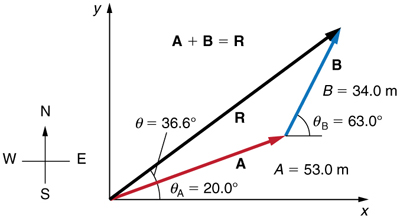
Figure :Vector \(\displaystyle A\) has magnitude \(\displaystyle 53.0 m\) and direction \(\displaystyle 20.0º\) north of thex-axis. Vector B has magnitude \(\displaystyle 34.0 m\) and direction \(\displaystyle 63.0º\) north of the x-axis. You can use analytical methods to determine the magnitude and direction of \(\displaystyle R\).
The components of \(\displaystyle A\) and \(\displaystyle B\) along thex-andy-axes represent walking due east and due north to get to the same ending point. Once found, they are combined to produce the resultant.
Following the method outlined above, we first find the components of \(\displaystyle A\) and \(\displaystyle B\) along thex-andy-axes. Note that \(\displaystyle A=53.0 m, θ_A=20.0º, B=34.0 m,\) and \(\displaystyle θ_B=63.0º\). We find thex-components by using \(\displaystyle A_x=Acosθ\), which gives
Similarly, they-components are found using \(\displaystyle A_y=Asinθ_A\):
Thex-andy-components of the resultant are thus
Now we can find the magnitude of the resultant by using the Pythagorean theorem:
Finally, we find the direction of the resultant:
![The addition of two vectors A and B is shown. Vector A is of magnitude fifty three units and is inclined at an angle of twenty degrees to the horizontal. Vector B is of magnitude thirty four units and is inclined at angle sixty three degrees to the horizontal. The components of vector A are shown as dotted vectors A X is equal to forty nine point eight meter along x axis and A Y is equal to eighteen point one meter along Y axis. The components of vector B are also shown as dotted vectors B X is equal to fifteen point four meter and B Y is equal to thirty point three meter. The horizontal component of the resultant R X is equal to A X plus B X is equal to sixty five point two meter. The vertical component of the resultant R Y is equal to A Y plus B Y is equal to forty eight point four meter. The magnitude of the resultant of two vectors is eighty one point two meters. The direction of the resultant R is in thirty six point six degree from the vector A in anticlockwise direction.](images/ch3/fig3-34-the-addition-of-two-vectors-a-and-b-is-s.jpg)
Figure : Using analytical methods, we see that the magnitude of \(\displaystyle R\) is \(\displaystyle 81.2 m\) and its direction is \(\displaystyle 36.6º\) north of east.
This example illustrates the addition of vectors using perpendicular components. Vector subtraction using perpendicular components is very similar—it is just the addition of a negative vector.
Subtraction of vectors is accomplished by the addition of a negative vector. That is, \(\displaystyle A−B≡A+(–B)\). Thus,the method for the subtraction of vectors using perpendicular components is identical to that for addition.The components of \(\displaystyle –B\) are the negatives of the components of \(\displaystyle B\). Thex-andy-components of the resultant \(\displaystyle A−B = R\) are thus
and the rest of the method outlined above is identical to that for addition. (See Figure .)
Analyzing vectors using perpendicular components is very useful in many areas of physics, because perpendicular quantities are often independent of one another. The next module, Projectile Motion, is one of many in which using perpendicular components helps make the picture clear and simplifies the physics.
![In this figure, the subtraction of two vectors A and B is shown. A red colored vector A is inclined at an angle theta A to the positive of x axis. From the head of vector A a blue vector negative B is drawn. Vector B is in west of south direction. The resultant of the vector A and vector negative B is shown as a black vector R from the tail of vector A to the head of vector negative B. The resultant R is inclined to x axis at an angle theta below the x axis. The components of the vectors are also shown along the coordinate axes as dotted lines of their respective colors.](images/ch3/fig3-35-in-this-figure-the-subtraction-of-two-ve.jpg)
PHET EXPLORATIONS: VECTOR ADDITION
Learn how to add vectors. Drag vectors onto a graph, change their length and angle, and sum them together. The magnitude, angle, and components of each vector can be displayed in several formats.
Step 1:Determine the coordinate system for the vectors. Then, determine the horizontal and vertical components of each vector using the equations
Step 2:Add the horizontal and vertical components of each vector to determine the components Rx and Ry of the resultant vector, R:
Step 3:Use the Pythagorean theorem to determine the magnitude, R, of the resultant vector R:
Step 4:Use a trigonometric identity to determine the direction, \(\displaystyle θ\), ofR:
📖 OpenStax College Physics, Section 3.3. openstax.org · CC BY 4.0
- Identify and explain the properties of a projectile, such as acceleration due to gravity, range, maximum height, and trajectory.
- Determine the location and velocity of a projectile at different points in its trajectory.
- Apply the principle of independence of motion to solve projectile motion problems.
Projectile motionis themotionof an object thrown or projected into the air, subject to only the acceleration of gravity. The object is called aprojectile, and its path is called itstrajectory.The motion of falling objects, as covered in Problem-Solving Basics for One-Dimensional Kinematics, is a simple one-dimensional type of projectile motion in which there is no horizontal movement. In this section, we consider two-dimensional projectile motion, such as that of a football or other object for whichair resistanceis negligible.
The most important fact to remember here is that motions along perpendicular axes are independent and thus can be analyzed separately. This fact was discussed in Kinematics in Two Dimensions: An Introduction, where vertical and horizontal motions were seen to be independent. The key to analyzing two-dimensional projectile motion is to break it into two motions, one along the horizontal axis and the other along the vertical. (This choice of axes is the most sensible, because acceleration due to gravity is vertical—thus, there will be no acceleration along the horizontal axis when air resistance is negligible.) As is customary, we call the horizontal axis thex-axis and the vertical axis they-axis. Figure illustrates the notation for displacement, where \(\displaystyle s\) is defined to be the total displacement and \(\displaystyle x\) and \(\displaystyle y\) are its components along the horizontal and vertical axes, respectively. The magnitudes of these vectors are s, x, and y. (Note that in the last section we used the notation \(\displaystyle A\) to represent a vector with components \(\displaystyle A_x\) and \(\displaystyle A_y\). If we continued this format, we would call displacement \(\displaystyle s\) with components \(\displaystyle s_x\) and \(\displaystyle s_y\). However, to simplify the notation, we will simply represent the component vectors as \(\displaystyle x\) and \(\displaystyle y\).)
Of course, to describe motion we must deal with velocity and acceleration, as well as with displacement. We must find their components along the x- andy-axes, too. We will assume all forces except gravity (such as air resistance and friction, for example) are negligible. The components of acceleration are then very simple: \(\displaystyle a_y=–g=–9.80 m/s^2\)(. (Note that this definition assumes that the upwards direction is defined as the positive direction. If you arrange the coordinate system instead such that the downwards direction is positive, then acceleration due to gravity takes a positive value.) Because gravity is vertical, \(\displaystyle a_x=0\). Both accelerations are constant, so the kinematic equations can be used.
REVIEW OF KINEMATIC EQUATIONS (CONSTANT)
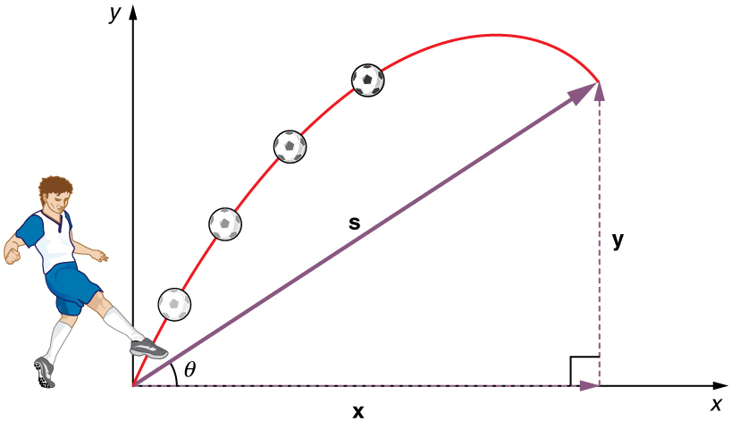
Given these assumptions, the following steps are then used to analyze projectile motion:
Step 1.Resolve or break the motion into horizontal and vertical components along the x- and y-axes.These axes are perpendicular, so \(\displaystyle A_x=Acosθ\) and \(\displaystyle A_y=Asinθ\) are used. The magnitude of the components of displacement \(\displaystyle s\) along these axes are \(\displaystyle x\) and \(\displaystyle y\). The magnitudes of the components of the velocity \(\displaystyle v\) are \(\displaystyle v_x=vcosθ\) and \(\displaystyle v_y=vsinθ\), where \(\displaystyle v\) is the magnitude of the velocity and θ is its direction, as shown in Figure. Initial values are denoted with a subscript 0, as usual.
Step 2.Treat the motion as two independent one-dimensional motions, one horizontal and the other vertical.The kinematic equations for horizontal and vertical motion take the following forms:
Step 3.Solve for the unknowns in the two separate motions—one horizontal and one vertical.Note that the only common variable between the motions is timet. The problem solving procedures here are the same as for one-dimensionalkinematicsand are illustrated in the solved examples below.
Step 4.Recombine the two motions to find the total displacement \(\displaystyle s\) and velocity \(\displaystyle v\). Because thex -andy -motions are perpendicular, we determine these vectors by using the techniques outlined in the Vector Addition and Subtraction: Analytical Methods and employing \(\displaystyle A=\sqrt{A^2_x+A^2_y}\) and \(\displaystyle θ=tan^{−1}(A_y/A_x)\) in the following form, where \(\displaystyle θ\) is the direction of the displacement \(\displaystyle s\) and \(\displaystyle θ_v\) is the direction of the velocity \(\displaystyle v\):
Total displacement and velocity
![In part a the figure shows projectile motion of a ball with initial velocity of v zero at an angle of theta zero with the horizontal x axis. The horizontal component v x and the vertical component v y at various positions of ball in the projectile path is shown. In part b only the horizontal velocity component v sub x is shown whose magnitude is constant at various positions in the path. In part c only vertical velocity component v sub y is shown. The vertical velocity component v sub y is upwards till it reaches the maximum point and then its direction changes to downwards. In part d resultant v of horizontal velocity component v sub x and downward vertical velocity component v sub y is found which makes an angle theta with the horizontal x axis. The direction of resultant velocity v is towards south east.](images/ch3/fig3-37-in-part-a-the-figure-shows-projectile-mo.jpg)
During a fireworks display, a shell is shot into the air with an initial speed of 70.0 m/s at an angle of75.0ºabove the horizontal, as illustrated in Figure. The fuse is timed to ignite the shell just as it reaches its highest point above the ground.
Because air resistance is negligible for the unexploded shell, the analysis method outlined above can be used. The motion can be broken into horizontal and vertical motions in which \(\displaystyle a_x=0\) and \(\displaystyle a_y=–g\). We can then define \(\displaystyle x_0\) and \(\displaystyle y_0\) to be zero and solve for the desired quantities.
By “height” we mean the altitude or vertical position y above the starting point. The highest point in any trajectory, called the apex, is reached when \(\displaystyle v_y=0\). Since we know the initial and final velocities as well as the initial position, we use the following equation to find \(\displaystyle y\):
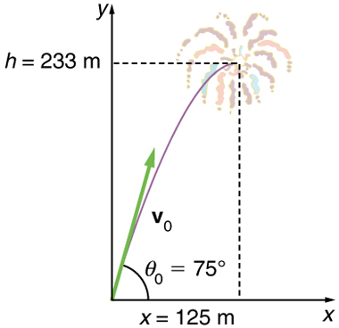
Because \(\displaystyle y_0\) and \(\displaystyle v_y\) are both zero, the equation simplifies to
Solving for \(\displaystyle y\) gives
Now we must find \(\displaystyle v_{0y}\), the component of the initial velocity in they-direction. It is given by \(\displaystyle v_{0y}=v_0sinθ\), where \(\displaystyle v_{0y}\) is the initial velocity of 70.0 m/s, and \(\displaystyle θ_0=75.0º\) is the initial angle. Thus,
and \(\displaystyle y\) is
Note that because up is positive, the initial velocity is positive, as is the maximum height, but the acceleration due to gravity is negative. Note also that the maximum height depends only on the vertical component of the initial velocity, so that any projectile with a 67.6 m/s initial vertical component of velocity will reach a maximum height of 233 m (neglecting air resistance). The numbers in this example are reasonable for large fireworks displays, the shells of which do reach such heights before exploding. In practice, air resistance is not completely negligible, and so the initial velocity would have to be somewhat larger than that given to reach the same height.
As in many physics problems, there is more than one way to solve for the time to the highest point. In this case, the easiest method is to use \(\displaystyle y=y_0+\frac{1}{2}(v_{0y}+v_y)t\). Because y0 is zero, this equation reduces to simply
Note that the final vertical velocity, \(\displaystyle v_y\), at the highest point is zero. Thus,
This time is also reasonable for large fireworks. When you are able to see the launch of fireworks, you will notice several seconds pass before the shell explodes. (Another way of finding the time is by using \(\displaystyle y=y_0+v_{0y}t−\frac{1}{2}gt^2\), and solving the quadratic equation for \(\displaystyle t\).)
Because air resistance is negligible, \(\displaystyle a_x=0\) and the horizontal velocity is constant, as discussed above. The horizontal displacement is horizontal velocity multiplied by time as given by \(\displaystyle x=x_0+v_xt\), where \(\displaystyle x_0\) is equal to zero:
where \(\displaystyle v_x\) is thex-component of the velocity, which is given by \(\displaystyle v_x=v_0cosθ_0\). Now,
The time \(\displaystyle t\) for both motions is the same, and so \(\displaystyle x\) is
The horizontal motion is a constant velocity in the absence of air resistance. The horizontal displacement found here could be useful in keeping the fireworks fragments from falling on spectators. Once the shell explodes, air resistance has a major effect, and many fragments will land directly below.
In solving part (a) of the preceding example, the expression we found for y is valid for any projectile motion where air resistance is negligible. Call the maximum height \(\displaystyle y=h\); then,
This equation defines themaximum heightof a projectile and depends only on the vertical component of the initial velocity.
DEFINING A COORDINATE SYSTEM
It is important to set up a coordinate system when analyzing projectile motion. One part of defining the coordinate system is to define an origin for the \(\displaystyle x\) and \(\displaystyle y\) positions. Often, it is convenient to choose the initial position of the object as the origin such that \(\displaystyle x_0=0\) and \(\displaystyle y_0=0\). It is also important to define the positive and negative directions in the \(\displaystyle x\) and \(\displaystyle y\) directions. Typically, we define the positive vertical direction as upwards, and the positive horizontal direction is usually the direction of the object’s motion. When this is the case, the vertical acceleration, \(\displaystyle g\), takes a negative value (since it is directed downwards towards the Earth). However, it is occasionally useful to define the coordinates differently. For example, if you are analyzing the motion of a ball thrown downwards from the top of a cliff, it may make sense to define the positive direction downwards since the motion of the ball is solely in the downwards direction. If this is the case, g takes a positive value.
Kilauea in Hawaii is the world’s most continuously active volcano. Very active volcanoes characteristically eject red-hot rocks and lava rather than smoke and ash. Suppose a large rock is ejected from the volcano with a speed of 25.0 m/s and at an angle above the horizontal, as shown in Figure. The rock strikes the side of the volcano at an altitude 20.0 m lower than its starting point. (a) Calculate the time it takes the rock to follow this path. (b) What are the magnitude and direction of the rock’s velocity at impact?
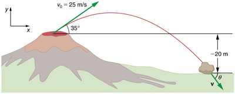
Again, resolving this two-dimensional motion into two independent one-dimensional motions will allow us to solve for the desired quantities. The time a projectile is in the air is governed by its vertical motion alone. We will solve for \(\displaystyle t\) first. While the rock is rising and falling vertically, the horizontal motion continues at a constant velocity. This example asks for the final velocity. Thus, the vertical and horizontal results will be recombined to obtain \(\displaystyle v\) and \(\displaystyle θ_v\) at the final time t determined in the first part of the example.
While the rock is in the air, it rises and then falls to a final position 20.0 m lower than its starting altitude. We can find the time for this by using
If we take the initial position \(\displaystyle y_0\) to be zero, then the final position is \(\displaystyle y=−20.0 m\). Now the initial vertical velocity is the vertical component of the initial velocity, found from \(\displaystyle v_{0y}=v_0sinθ_0 = (25.0 m/s)(sin 35.0º) = 14.3 m/s.\) Substituting known values yields
Rearranging terms gives a quadratic equation in \(\displaystyle t\):
This expression is a quadratic equation of the form \(\displaystyle at^2+bt+c=0\), where the constants are \(\displaystyle a=4.90, b=–14.3\), and \(\displaystyle c=–20.0.\) Its solutions are given by the quadratic formula:
This equation yields two solutions: \(\displaystyle t=3.96\) and \(\displaystyle t=–1.03\). (It is left as an exercise for the reader to verify these solutions.) The time is \(\displaystyle t=3.96s\) or \(\displaystyle –1.03s\). The negative value of time implies an event before the start of motion, and so we discard it. Thus,
The time for projectile motion is completely determined by the vertical motion. So any projectile that has an initial vertical velocity of 14.3 m/s and lands 20.0 m below its starting altitude will spend 3.96 s in the air.
From the information now in hand, we can find the final horizontal and vertical velocities \(\displaystyle v_x\) and \(\displaystyle v_y\) and combine them to find the total velocity v and the angle \(\displaystyle θ_0\) it makes with the horizontal. Of course, \(\displaystyle v_x\) is constant so we can solve for it at any horizontal location. In this case, we chose the starting point since we know both the initial velocity and initial angle. Therefore:
The final vertical velocity is given by the following equation:
where \(\displaystyle v_{0y}\) was found in part (a) to be14.3 m/s. Thus,
To find the magnitude of the final velocity v we combine its perpendicular components, using the following equation:
The direction θv is found from the equation:
The negative angle means that the velocity is50.1ºbelow the horizontal. This result is consistent with the fact that the final vertical velocity is negative and hence downward—as you would expect because the final altitude is 20.0 m lower than the initial altitude. (See Figure.)
One of the most important things illustrated by projectile motion is that vertical and horizontal motions are independent of each other. Galileo was the first person to fully comprehend this characteristic. He used it to predict the range of a projectile. On level ground, we definerangeto be the horizontal distance traveled by a projectile. Galileo and many others were interested in the range of projectiles primarily for military purposes—such as aiming cannons. However, investigating the range of projectiles can shed light on other interesting phenomena, such as the orbits of satellites around the Earth. Let us consider projectile range further.
![Part a of the figure shows three different trajectories of projectiles on level ground. In each case the projectiles makes an angle of forty five degrees with the horizontal axis. The first projectile of initial velocity thirty meters per second travels a horizontal distance of R equal to ninety one point eight meters. The second projectile of initial velocity forty meters per second travels a horizontal distance of R equal to one hundred sixty three meters. The third projectile of initial velocity fifty meters per second travels a horizontal distance of R equal to two hundred fifty five meters.](images/ch3/fig3-40-part-a-of-the-figure-shows-three-differe.jpg)
How does the initial velocity of a projectile affect its range? Obviously, the greater the initial speed \(\displaystyle v_0\), the greater the range, as shown in Figure(a). The initial angle \(\displaystyle θ_0\) also has a dramatic effect on the range, as illustrated in Figure(b). For a fixed initial speed, such as might be produced by a cannon, the maximum range is obtained with \(\displaystyle θ_0=45º\). This is true only for conditions neglecting air resistance. If air resistance is considered, the maximum angle is approximately \(\displaystyle 38º\). Interestingly, for every initial angle except \(\displaystyle 45º\), there are two angles that give the same range—the sum of those angles is \(\displaystyle 90º\). The range also depends on the value of the acceleration of gravity \(\displaystyle g\). The lunar astronaut Alan Shepherd was able to drive a golf ball a great distance on the Moon because gravity is weaker there. The range \(\displaystyle R\) of a projectile on level ground for which air resistance is negligible is given by
where \(\displaystyle v_0\) is the initial speed and \(\displaystyle θ_0\) is the initial angle relative to the horizontal. The proof of this equation is left as an end-of-chapter problem (hints are given), but it does fit the major features of projectile range as described.
When we speak of the range of a projectile on level ground, we assume that \(\displaystyle R\) is very small compared with the circumference of the Earth. If, however, the range is large, the Earth curves away below the projectile and acceleration of gravity changes direction along the path. The range is larger than predicted by the range equation given above because the projectile has farther to fall than it would on level ground. (See Figure.) If the initial speed is great enough, the projectile goes into orbit. This is called exit velocity. This possibility was recognized centuries before it could be accomplished. When an object is in orbit, the Earth curves away from underneath the object at the same rate as it falls. The object thus falls continuously but never hits the surface. These and other aspects of orbital motion, such as the rotation of the Earth, will be covered analytically and in greater depth later in this text.
Once again we see that thinking about one topic, such as the range of a projectile, can lead us to others, such as the Earth orbits. In Addition of Velocities, we will examine the addition of velocities, which is another important aspect of two-dimensional kinematics and will also yield insights beyond the immediate topic.
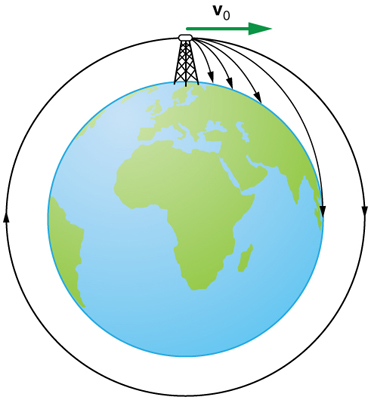
PHET EXPLORATIONS: PROJECTILE MOTION
Blast a Buick out of a cannon! Learn about projectile motion by firing various objects. Set the angle, initial speed, and mass. Add air resistance. Make a game out of this simulation by trying to hit a target.
2. Analyze the motion of the projectile in the horizontal direction using the following equations:
3. Analyze the motion of the projectile in the vertical direction using the following equations:
4. Recombine the horizontal and vertical components of location and/or velocity using the following equations:
📖 OpenStax College Physics, Section 3.4. openstax.org · CC BY 4.0
- Apply principles of vector addition to determine relative velocity.
- Explain the significance of the observer in the measurement of velocity.
If a person rows a boat across a rapidly flowing river and tries to head directly for the other shore, the boat instead moves diagonallyrelative to the shore, as in Figure \(\displaystyle . The boat does not move in the direction in which it is pointed. The reason, of course, is that the river carries the boat downstream. Similarly, if a small airplane flies overhead in a strong crosswind, you can sometimes see that the plane is not moving in the direction in which it is pointed, as illustrated in Figure \(\displaystyle . The plane is moving straight ahead relative to the air, but the movement of the air mass relative to the ground carries it sideways.
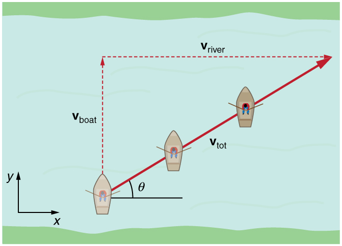
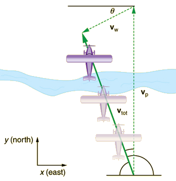
In each of these situations, an object has a velocity relative to a medium (such as a river) and that medium has a velocity relative to an observer on solid ground. The velocity of the object relative to the observer is the sum of these velocity vectors, as indicated in Figures \(\displaystyle and \(\displaystyle . These situations are only two of many in which it is useful to add velocities. In this module, we first re-examine how to add velocities and then consider certain aspects of what relative velocity means.
How do we add velocities? Velocity is a vector (it has both magnitude and direction); the rules of vector addition discussed inVector Addition and Subtraction: Graphical Methods and Vector Addition and Subtraction: Analytical Methods apply to the addition of velocities, just as they do for any other vectors. In one-dimensional motion, the addition of velocities is simple—they add like ordinary numbers. For example, if a field hockey player is moving at 5 m/s straight toward the goal and drives the ball in the same direction with a velocity of 30 m/s relative to her body, then the velocity of the ball is 35 m/s relative to the stationary, profusely sweating goalkeeper standing in front of the goal.
In two-dimensional motion, either graphical or analytical techniques can be used to add velocities. We will concentrate on analytical techniques. The following equations give the relationships between the magnitude and direction of velocity (\(\displaystyle v\) and \(\displaystyle θ\) ) and its components (\(\displaystyle v_x\) and \(\displaystyle v_y\) ) along the x- and y-axes of an appropriately chosen coordinate system:
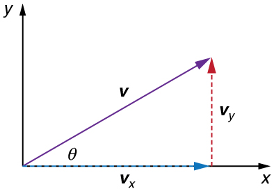
These equations are valid for any vectors and are adapted specifically for velocity. The first two equations are used to find the components of a velocity when its magnitude and direction are known. The last two are used to find the magnitude and direction of velocity when its components are known.
TAKE-HOME EXPERIMENT: RELATIVE VELOCITY OF A BOAT
Fill a bathtub half-full of water. Take a toy boat or some other object that floats in water. Unplug the drain so water starts to drain. Try pushing the boat from one side of the tub to the other and perpendicular to the flow of water. Which way do you need to push the boat so that it ends up immediately opposite? Compare the directions of the flow of water, heading of the boat, and actual velocity of the boat.
Refer to Figure \(\displaystyle , which shows a boat trying to go straight across the river. Let us calculate the magnitude and direction of the boat’s velocity relative to an observer on the shore, \(\displaystyle v_{tot}\). The velocity of the boat, vboat , is 0.75 m/s in the y -direction relative to the river and the velocity of the river, \(\displaystyle v_{river}\), is 1.20 m/s to the right.
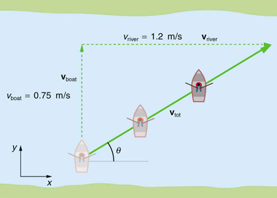
We start by choosing a coordinate system with its \(\displaystyle x\)-axis parallel to the velocity of the river, as shown in Figure. Because the boat is directed straight toward the other shore, its velocity relative to the water is parallel to the y-axis and perpendicular to the velocity of the river. Thus, we can add the two velocities by using the equations \(\displaystyle v_{tot}=\sqrt{v^2_x+v^2_y}\) and \(\displaystyle θ=tan^{−1}(v_y/v_x)\) directly.
The magnitude of the total velocity is
The direction of the total velocity \(\displaystyle θ\) is given by:
Both the magnitude v and the direction \(\displaystyle θ\) of the total velocity are consistent with Figure. Note that because the velocity of the river is large compared with the velocity of the boat, it is swept rapidly downstream. This result is evidenced by the small angle (only32.0º) the total velocity has relative to the riverbank.
Calculate the wind velocity for the situation shown in Figure \(\displaystyle . The plane is known to be moving at 45.0 m/s due north relative to the air mass, while its velocity relative to the ground (its total velocity) is 38.0 m/s in a direction20.0ºwest of north.
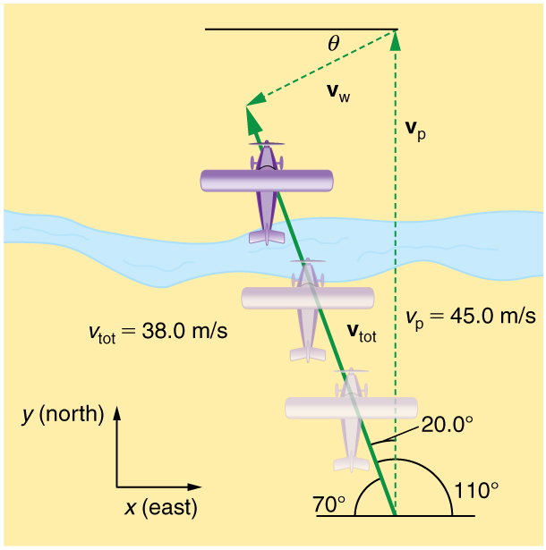
In this problem, somewhat different from the previous example, we know the total velocity \(\displaystyle v_{to}\)t and that it is the sum of two other velocities, \(\displaystyle v_w\) (the wind) and \(\displaystyle v_p\) (the plane relative to the air mass). The quantity \(\displaystyle v_p\) is known, and we are asked to find vw. None of the velocities are perpendicular, but it is possible to find their components along a common set of perpendicular axes. If we can find the components of \(\displaystyle v_w\), then we can combine them to solve for its magnitude and direction. As shown in Figure, we choose a coordinate system with itsx-axis due east and itsy-axis due north (parallel to \(\displaystyle v_p\)). (You may wish to look back at the discussion of the addition of vectors using perpendicular components in Vector Addition and Subtraction: Analytical Methods.)
Because \(\displaystyle v_{tot}\) is the vector sum of the \(\displaystyle v_w\) and \(\displaystyle v_p\), itsx-andy-components are the sums of thex-andy-components of the wind and plane velocities. Note that the plane only has vertical component of velocity so \(\displaystyle v_{px}=0\) and \(\displaystyle v_{py}=v_p\). That is,
We can use the first of these two equations to find \(\displaystyle v_{wx}\):
Because \(\displaystyle v_{tot}=38.0 m/s\) and \(\displaystyle cos 110º=–0.342\) we have
The minus sign indicates motion west which is consistent with the diagram.
Now, to find \(\displaystyle v_{wy}\) we note that
Here \(\displaystyle v_{toty}=v_{tot}sin 110º\); thus,
This minus sign indicates motion south which is consistent with the diagram.
Now that the perpendicular components of the wind velocity \(\displaystyle v_{wx}\) and \(\displaystyle v_{wy}\) are known, we can find the magnitude and direction of \(\displaystyle v_w\). First, the magnitude is
The wind’s speed and direction are consistent with the significant effect the wind has on the total velocity of the plane, as seen in Figure. Because the plane is fighting a strong combination of crosswind and head-wind, it ends up with a total velocity significantly less than its velocity relative to the air mass as well as heading in a different direction.
Note that in both of the last two examples, we were able to make the mathematics easier by choosing a coordinate system with one axis parallel to one of the velocities. We will repeatedly find that choosing an appropriate coordinate system makes problem solving easier. For example, in projectile motion we always use a coordinate system with one axis parallel to gravity.
When adding velocities, we have been careful to specify that thevelocity is relative to some reference frame. These velocities are calledrelative velocities. For example, the velocity of an airplane relative to an air mass is different from its velocity relative to the ground. Both are quite different from the velocity of an airplane relative to its passengers (which should be close to zero). Relative velocities are one aspect ofrelativity, which is defined to be the study of how different observers moving relative to each other measure the same phenomenon.
Nearly everyone has heard of relativity and immediately associates it with Albert Einstein (1879–1955), the greatest physicist of the 20th century. Einstein revolutionized our view of nature with hismoderntheory of relativity, which we shall study in later chapters. The relative velocities in this section are actually aspects of classical relativity, first discussed correctly by Galileo and Isaac Newton.Classical relativityis limited to situations where speeds are less than about 1% of the speed of light—that is, less than . Most things we encounter in daily life move slower than this speed.
Let us consider an example of what two different observers see in a situation analyzed long ago by Galileo. Suppose a sailor at the top of a mast on a moving ship drops his binoculars. Where will it hit the deck? Will it hit at the base of the mast, or will it hit behind the mast because the ship is moving forward? The answer is that if air resistance is negligible, the binoculars will hit at the base of the mast at a point directly below its point of release. Now let us consider what two different observers see when the binoculars drop. One observer is on the ship and the other on shore. The binoculars have no horizontal velocity relative to the observer on the ship, and so he sees them fall straight down the mast. (Figure \(\displaystyle ; blue curve) To the observer on shore, the binoculars and the ship have thesamehorizontal velocity, so both move the same distance forward while the binoculars are falling. This observer sees the red curved path shown in Figure \(\displaystyle . Although the paths look different to the different observers, each sees the same result—the binoculars hit at the base of the mast and not behind it. To get the correct description, it is crucial to correctly specify the velocities relative to the observer.
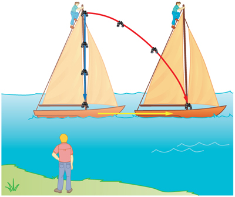
An airline passenger drops a coin while the plane is moving at 260 m/s. What is the velocity of the coin when it strikes the floor 1.50 m below its point of release: (a) Measured relative to the plane? (b) Measured relative to the Earth?
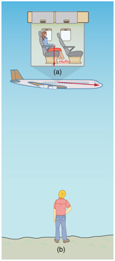
Both problems can be solved with the techniques for falling objects and projectiles. In part (a), the initial velocity of the coin is zero relative to the plane, so the motion is that of a falling object (one-dimensional). In part (b), the initial velocity is 260 m/s horizontal relative to the Earth and gravity is vertical, so this motion is a projectile motion. In both parts, it is best to use a coordinate system with vertical and horizontal axes.
Using the given information, we note that the initial velocity and position are zero, and the final position is 1.50 m. The final velocity can be found using the equation:
Substituting known values into the equation, we get
We know that the square root of 29.4 has two roots: 5.42 and -5.42. We choose the negative root because we know that the velocity is directed downwards, and we have defined the positive direction to be upwards. There is no initial horizontal velocity relative to the plane and no horizontal acceleration, and so the motion is straight down relative to the plane.
Because the initial vertical velocity is zero relative to the ground and vertical motion is independent of horizontal motion, the final vertical velocity for the coin relative to the ground is \(\displaystyle v_y=−5.42m/s\), the same as found in part (a). In contrast to part (a), there now is a horizontal component of the velocity. However, since there is no horizontal acceleration, the initial and final horizontal velocities are the same and \(\displaystyle v_x=260 m/s\). Thex-andy-components of velocity can be combined to find the magnitude of the final velocity:
The direction is given by:
In part (a), the final velocity relative to the plane is the same as it would be if the coin were dropped from rest on the Earth and fell 1.50 m. This result fits our experience; objects in a plane fall the same way when the plane is flying horizontally as when it is at rest on the ground. This result is also true in moving cars. In part (b), an observer on the ground sees a much different motion for the coin. The plane is moving so fast horizontally to begin with that its final velocity is barely greater than the initial velocity. Once again, we see that in two dimensions, vectors do not add like ordinary numbers—the final velocity v in part (b) is not \(\displaystyle (260 – 5.42) m/s\); rather, it is \(\displaystyle 260.06 m/s.\) The velocity’s magnitude had to be calculated to five digits to see any difference from that of the airplane. The motions as seen by different observers (one in the plane and one on the ground) in this example are analogous to those discussed for the binoculars dropped from the mast of a moving ship, except that the velocity of the plane is much larger, so that the two observers see very different paths. (See Figure.) In addition, both observers see the coin fall 1.50 m vertically, but the one on the ground also sees it move forward 144 m (this calculation is left for the reader). Thus, one observer sees a vertical path, the other a nearly horizontal path.
MAKING CONNECTIONS: RELATIVITY AND EINSTEIN
Because Einstein was able to clearly define how measurements are made (some involve light) and because the speed of light is the same for all observers, the outcomes are spectacularly unexpected. Time varies with observer, energy is stored as increased mass, and more surprises await.
PHET EXPLORATIONS: MOTION IN 2D
Try the new "Ladybug Motion 2D" simulation for the latest updated version. Learn about position, velocity, and acceleration vectors. Move the ball with the mouse or let the simulation move the ball in four types of motion (2 types of linear, simple harmonic, circle).

📖 OpenStax College Physics, Section 3.5. openstax.org · CC BY 4.0
| Section | Title |
|---|---|
| 3.1 | 3.1: Kinematics in Two Dimensions - An Introduction |
| 3.2 | 3.2: Vector Addition and Subtraction- Graphical Methods |
| 3.3 | 3.3: Vector Addition and Subtraction- Analytical Methods |
| 3.4 | 3.4: Projectile Motion |
| 3.5 | 3.5: Addition of Velocities |